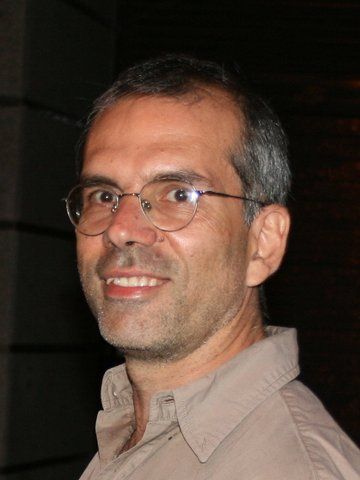

Fifteenth European Big Data Management & Analytics Summer School (eBISS 2027)
Directors of the School
-
Massimiliano de Leoni
Associate Professor of Computer Science, Department of Mathematics, University of Padova, ItalyDr. Massimiliano de Leoni is an Associate Professor of Computer Science at the University of Padua (UniPd), Italy, where he leads a research group on Process Science. He obtained a Ph.D. in Computer Engineering in 2009 at SAPIENZA - University of Rome on a thesis on Business Process Flexibility and Adaptation. From 2014 to 2018, he was an Assistant Professor at Eindhoven University of Technology (TU/e), the Netherlands. He is currently the UniPd’s coordinator of the EU-funded Erasmus Mundus BDMA – Big Data Management and Analytics. He is a member of the IEEE Task Force on Process Mining. The research areas of Prof. de Leoni include Business Process Management and Modeling, Process Mining, Business Process Improvement, Process Simulation, Predictive Analytics, and Process-Aware Recommender Systems.
Email: deleoni@math.unipd.it
Web: https://www.math.unipd.it/~deleoni/index.html -

Esteban Zimányi
Université Libre de Bruxelles, BelgiumEsteban Zimányi is a professor and the director of the Department of Computer & Decision Engineering (CoDE) at ULB. He is also the academic director of the Computer Science program at the Faculty of Applied Sciences. He started his studies at the Universidad Autónoma de Centro América, Costa Rica. He received a B.Sc. (1988) and a doctorate (1992) in computer science from the Faculty of Sciences at the ULB. During 1997, he was a visiting researcher at the Database Laboratory of the Ecole Polytechnique Fédérale de Lausanne, Switzerland. His current research interests include data warehouses, spatio-temporal databases, geographic information systems, semantic web and web services.
Email: ezimanyi@ulb.ac.be
Web: http://cs.ulb.ac.be/members/esteban
- Home page
- Organization
- Participants
- Related Events
- Organized by